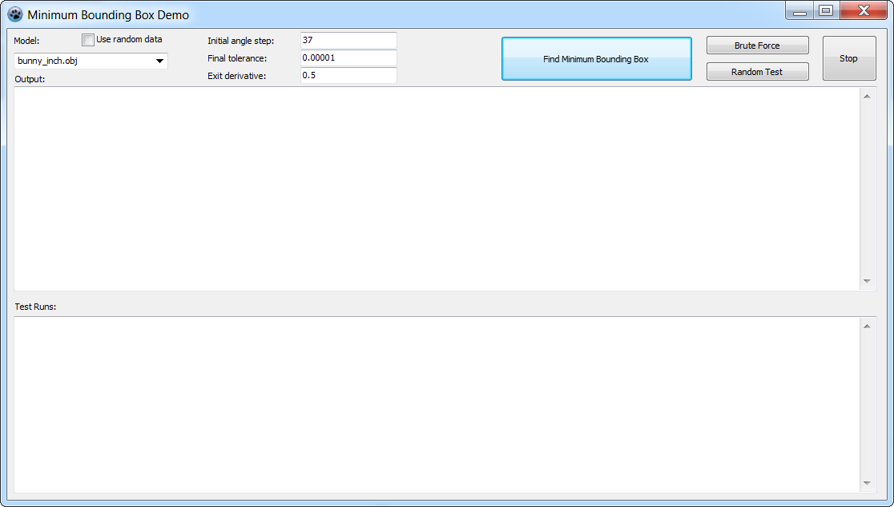
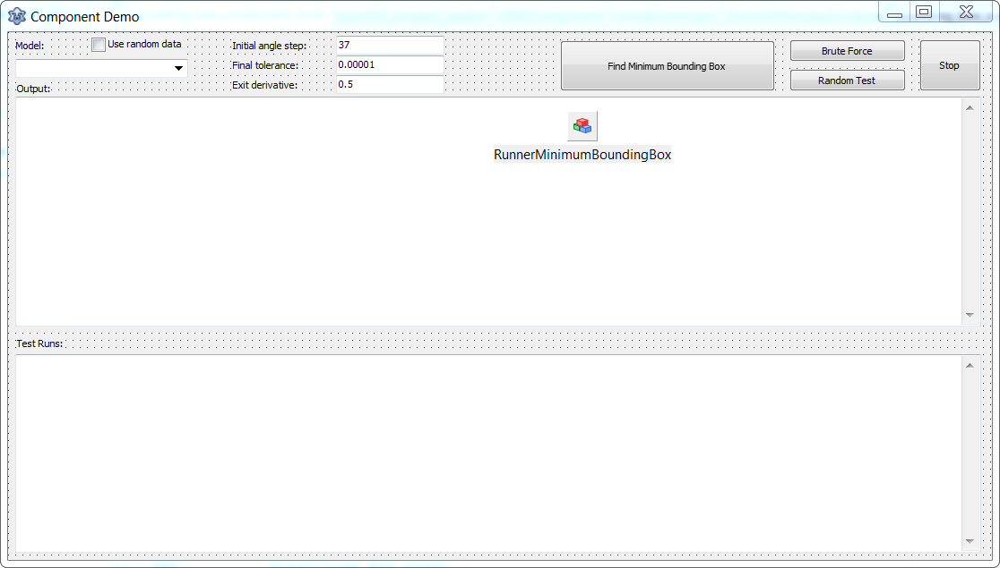

The downhill simplex optimisation algorithm for Delphi and Lazarus, in two variants — the classical one and a version with simulated annealing — packaged so that the algorithm knows nothing about the problem it is solving.
Written for Fit, and used by MotifMASTER as well. Runs on Windows, Linux and macOS.
Licence
MPL-2.0 — see LICENSE. The Mozilla Public License is file-level: a program of any licence, free or commercial, may use these components, and changes to their own files stay under MPL-2.0 with their source available.
What is in it
| Component | What it does | State |
|---|---|---|
TDownhillSimplexAlgorithm | The classical downhill simplex. | Implemented |
TDownhillSimplexSAAlgorithm | The same, with simulated annealing, for a surface with more than one minimum. | Implemented |
TDownhillSimplexServer | The container a host talks to, wrapping the algorithm as a component. | Implemented |
TCombEnumerator, TCombSelector | Combinatorial enumeration of discrete parameter values. | Implemented |
TRunningThread, TRunner, TRunnerPool | Background execution and a pool for running independent optimisations in parallel. | Implemented |
The algorithm is abstracted from any particular task. The host
implements IDownhillSimplexServer — it supplies the parameters
and evaluates the goal function — and the algorithm never learns what they
mean.
RunningThread does not depend on the LCL: it calls an injectable
idle hook (OnProcessMessages) instead of the widget set, so a console
program can use the runner pool without linking a UI.
Class diagram
classDiagram
direction LR
class TComponent["TComponent"]
<<external>> TComponent
class TComponentList["TComponentList"]
<<external>> TComponentList
class TObject["TObject"]
<<external>> TObject
class TThread["TThread"]
<<external>> TThread
class IDiscretValue["IDiscretValue"]
<<interface>> IDiscretValue
class IDownhillRealParameters["IDownhillRealParameters"]
<<interface>> IDownhillRealParameters
class IDownhillSimplexParameters["IDownhillSimplexParameters"]
<<interface>> IDownhillSimplexParameters
class IDownhillSimplexServer["IDownhillSimplexServer"]
<<interface>> IDownhillSimplexServer
class IOptimizedFunction["IOptimizedFunction"]
<<interface>> IOptimizedFunction
class IUpdatingResults["IUpdatingResults"]
<<interface>> IUpdatingResults
class TAbstractDecision["TAbstractDecision"]
class TAlgorithm["TAlgorithm"]
class TAlgorithmContainer["TAlgorithmContainer"]
class TByteDecision["TByteDecision"]
class TCombEnumerator["TCombEnumerator"]
class TCombSelector["TCombSelector"]
class TDecisionsList["TDecisionsList"]
class TDownhillSimplexAlgorithm["TDownhillSimplexAlgorithm"]
class TDownhillSimplexDecision["TDownhillSimplexDecision"]
class TDownhillSimplexSAAlgorithm["TDownhillSimplexSAAlgorithm"]
class TDownhillSimplexSADecision["TDownhillSimplexSADecision"]
class TDownhillSimplexServer["TDownhillSimplexServer"]
class TFloatDecision["TFloatDecision"]
class TOneDimDecision["TOneDimDecision"]
class TRunner["TRunner"]
class TRunnerPool["TRunnerPool"]
class TRunningThread["TRunningThread"]
class TThreadAlgorithmContainer["TThreadAlgorithmContainer"]
class TTwoDimDecision["TTwoDimDecision"]
class TTwoDimFloatDecision["TTwoDimFloatDecision"]
TComponent <|-- TAbstractDecision
TComponent <|-- TAlgorithm
TComponent <|-- TAlgorithmContainer
TOneDimDecision <|-- TByteDecision
TCombEnumerator <|-- TCombSelector
TComponentList <|-- TDecisionsList
TAlgorithm <|-- TDownhillSimplexAlgorithm
TFloatDecision <|-- TDownhillSimplexDecision
TDownhillSimplexAlgorithm <|-- TDownhillSimplexSAAlgorithm
TDownhillSimplexDecision <|-- TDownhillSimplexSADecision
TAlgorithmContainer <|-- TDownhillSimplexServer
IDownhillSimplexServer <|.. TDownhillSimplexServer
TOneDimDecision <|-- TFloatDecision
TAbstractDecision <|-- TOneDimDecision
TComponent <|-- TRunner
TObject <|-- TRunnerPool
TThread <|-- TRunningThread
TAlgorithmContainer <|-- TThreadAlgorithmContainer
TAbstractDecision <|-- TTwoDimDecision
TTwoDimDecision <|-- TTwoDimFloatDecision
20 classes and 6 interfaces are declared in package/, read from the units themselves rather than from a diagram kept by hand.
Demo applications
The example problem is the minimum bounding box: given a set of 3D points, find the smallest box that encloses them, by varying rotation angles. See minimum bounding box and bounding volume. Many thanks to Ingo Wulf for contributing to the development and providing the test models.
There are three, sharing the code in examples/Common/:
| Example | Shows |
|---|---|
examples/BoundingBoxServerForm/ | Supplying the algorithm with data through an interface, and optimising independent tasks in parallel. |
examples/BoundingBoxComponentForm/ | Using the form component to run a long optimisation on its own thread, leaving the application responsive. |
examples/BoundingBoxConsole/ | The same optimisation with no UI at all — the case the LCL decoupling exists for. |


Using it
The package is package/FitMinimizers.lpk for Lazarus and
package/FitMinimizers.dpk for Delphi. Open it in the IDE and compile.
The examples are ordinary projects beside it —
bounding_box_cli.lpi in examples/BoundingBoxConsole/, and
one .lpi in each of the two form examples.